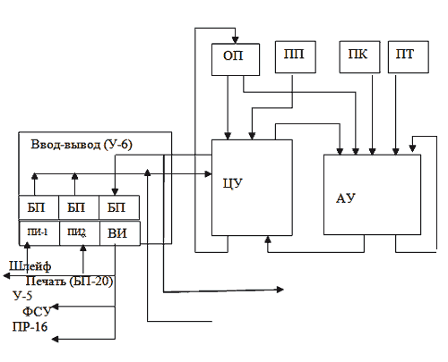

Первое поколение – ЭВМ М-4 и М4-М
В 1957 году в Институте электронных управляющих машин (этот институт был образован на базе лаборатории И.С. Брука) разрабатывалось техническое задание на проектирование ЭВМ для экспериментального комплекса РЛС контроля космического пространства. ТЗ утвердили академик АН СССР А.Л. Минц и член-корреспондент АН СССР И.С. Брук. Руководство работами по созданию этой ЭВМ и вводу её в эксплуатацию совместно с РЛС возложили на М.А. Карцева, образовав под его руководством специальную лабораторию №2. Новой ЭВМ присвоили наименование М-4. Спецлаборатория №2 явилась основой для развития коллектива и его роста до уровня Научно-исследовательского института вычислительных комплексов, а машина М-4 определила дальнейшее направление новых разработок М.А. Карцева – создание серии вычислительных машин типа «М» для построения вычислительных комплексов, обеспечивающих решение задач и обработку информации в реальном масштабе времени. М-4 открыла первое поколение машин Карцева такого класса. Авторский коллектив разработки: главный конструктор – к.т.н. М.А.Карцев, основные разработчики – Г.И. Танетов, Л.В. Иванов, Р.П. Шидловский, Ю.В. Рогачев, Г.И. Смирнова, Р.П. Макарова, Е.С. Шерихов, В.П. Кузнецова. Разработка и передача конструкторской документации заводу изготовителю была завершена в 1958году.
М-4 имела вполне современную на тот момент архитектуру ЭВМ для обработки информации в реальном масштабе времени и включала: центральную процессорную часть (устройство управления, арифметическое устройство, внутренние запоминающие устройства – оперативную память, постоянную память программ, констант, таблиц) и систему ввода-вывода информации.
Арифметическое устройство полупроводниковое: триггер строился на транзисторах П16, логические схемы на диодах Д9. Использовалась импульсно-потенциальная система элементов. Потенциальные элементы – диодная логика; импульсно-потенциальные элементы - клапан (двухвходовое И), один вход которого был импульсным, а второй вход – потенциальным. Триггер имел импульсные входы и потенциальные выходы. Основой АУ были однотипные ячейки, каждая из которых содержала один разряд обрабатывающей аппаратуры. В узле управления АУ находилось несколько триггеров, которые с помощью диодной логики при выполнении тех или иных арифметических операций сцеплялись в соответствующие цепочки и кольца. В этом АУ была осуществлена впервые в мире аппаратная реализация операции вычисления квадратного корня.
Центральное управление предназначено для автоматического управления выполнением операций. Оно выбирает из постоянной памяти программ (ПП) инструкции и в соответствии с имеющимися в них указаниями выбирает необходимые константы из постоянной памяти констант (ПК) и данные, подлежащие обработке, из оперативно памяти; производит над этими данными те или иные действия и записывает результаты этих действий в указанные ячейки ОП. По указаниям программы эти результаты могут направляться на кодовые магнитные самописцы типа ПР-16, на устройство отображения информации, на печатающее устройство. Новые данные для обработки поступали в оперативную память машины непосредственно из устройства сопряжения с РЛС (при работе в реальном времени) или вводились с перфоленты при помощи фотоэлектрического считывающего устройства.
Оперативная память представляла собой ферритовое устройство матричного типа на 1024 24-разрядных чисел. В качестве запоминающего элемента использовались сердечники диаметром 1,5 мм (внутренний - 1,1 мм ) и высотой 0,7 мм , изготовленные из магнитного материала ВТ-1. Цикл обращения - 1,4 мкс.
Постоянная память матричного типа, построена на тех же сердечниках что и ОП. Различие только в порядке прошивки информационных обмоток.
Комплект внешних устройств включал фотосчитывающее устройство с перфолент (ФСУ), устройство «быстрой» печати (БП-20) и специализированное абонентское сопряжение для ввода и вывода информации РЛС с параллельным 14-канальным шлейфом. Для контроля информации использовались электронный индикатор для визуального отображения информации (У-5) и кодовые самописцы ПР-16 на магнитной ленте.
ЭВМ М-4 была асинхронной, имела одноадресную систему команд, большой набор арифметических операций, в том числе аппаратно реализованных сложных операций (умножение, двойное сравнение, извлечение квадратного корня и др.) и операций управления. Соблюдался принцип максимальной загрузки всего оборудования. Для преобразования адресов использовалось специальное 10-разрядное устройство. Резервы по производительности использовались для автоматического контроля работы машины путем двойных просчетов отдельных частей программы и запуска тест-программ.
Основные технические характеристики ЭВМ М-4.
- Система счисления – двоичная.
- Количество двоичных разрядов – 23.
- Представление чисел – с фиксированной запятой.
- Среднее быстродействие – 20 тыс. оп/с. (50 тыс. операций сложения или вычитания в секунду, 15 тыс. операций умножения в секунду, 5,2 тыс. операций деления или извлечения квадратного корня в секунду)
- Объём оперативной памяти – 1024 23-разрядных чисел.
- Объём постоянной памяти программ – 1024 23-разрядных чисел.
- Объём постоянной памяти констант – 128 12-разрядных чисел.
- Объём постоянной памяти таблиц – 256 44-разрядных чисел.
- Объём буферной памяти узла ПИ-1 – 120 15-разрядных чисел.
- Объём буферной памяти узла ПИ-2 – 64 15-разрядных чисел.
- Объём буферной памяти узла ВИ – 1280 32-разрядных чисел
- Ввод/вывод информации при работе в реальном масштабе времени – параллельный, по 14 каналам. Скорость 6250 чисел в секунду.
- Скорость ввода информации с перфоленты – 45 - 50 чисел в секунду.
- Скорость печати – 7 строк по 6 шестнадцатеричных цифр в секунду.
Блок-схема ЭВМ М-4
- ЦУ – центральное управление;
- АУ – арифметическое устройство;
- ОП – оперативная память;
- ПП – постоянная память программ;
- ПК – постоянная память констант;
- ПТ – постоянная память таблиц;
- БП – буферная память регистров;
- ПИ-1, ПИ-2 – регистры приёма информации;
- ВИ – регистр выдачи информации;
- У-5 – устройство отображения информации;
- ПР-16 – магнитные самописцы (магнитная лента);
- БП-20 – печатающее устройство («быстрая печать»);
- ФСУ – фотосчитывающее устройство.

В 1960 году было изготовлено два комплекта этой машины. Первый комплект был направлен на объект для стыковки с РЛС экспериментального комплекса. Второй комплект предназначался для управления и обработки информации РЛС другого частотного диапазона, поэтому для него предстояло разработать и изготовить дополнительное устройство первичной обработки с более высоким быстродействием. Была разработана принципиально новая система потенциальных логических элементов с использованием высокочастотных диффузионных транзисторов. Основу системы составлял инвертор – формирователь уровней с многоступенными диодными логическими схемами. Функциональная схема устройства предусматривала построение широкоформатных регистров, которые обеспечивали одновременно параллельную обработку до 16 радиолокационных сигналов. Эти два новых технических решения обеспечили выполнение заданных требований по быстродействию. Устройство включало переключатель секторов, преобразователь кодов, накопитель, пороговое устройство, устройство перекодирования, буферную память. Все оборудование размещалось в одном типовом шкафу машины М-4. Устройство первичной обработки в 1961 году было изготовлено и состыковано со вторым комплектом М-4, который в этой комплектации получил обозначение М4-М и включался для совместной работы со второй РЛС на объекте.
В июле 1962 года первый комплект ЭВМ М-4 в составе экспериментального радиолокационного комплекса успешно выдержал совместные испытания. Оба комплекта этих машин работали совместно с радиолокационными станциями экспериментального комплекса до 1966 года.